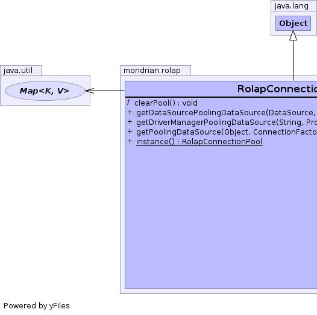
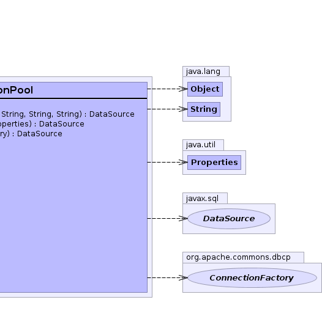

class RolapConnectionPool extends Object
 |
 |
| Modifier and Type | Method and Description |
|---|---|
(package private) void |
clearPool()
Clears the connection pool for testing purposes
|
DataSource |
getDataSourcePoolingDataSource(DataSource dataSource,
String dataSourceName,
String jdbcUser,
String jdbcPassword) |
DataSource |
getDriverManagerPoolingDataSource(String jdbcConnectString,
Properties jdbcProperties) |
DataSource |
getPoolingDataSource(Object key,
org.apache.commons.dbcp.ConnectionFactory connectionFactory)
Sets up a pooling data source for connection pooling.
|
static RolapConnectionPool |
instance() |
public static RolapConnectionPool instance()
public DataSource getPoolingDataSource(Object key, org.apache.commons.dbcp.ConnectionFactory connectionFactory)
This takes a normal jdbc connection string, and requires a jdbc
driver to be loaded, and then uses a
DriverManagerConnectionFactory to create connections to the
database.
An alternative method of configuring a pooling driver is to use an external configuration file. See the the Apache jakarta-commons commons-pool documentation.
key - Identifies which connection factory to use. A typical key is
a JDBC connect string, since each JDBC connect string requires a
different connection factory.connectionFactory - Creates connections from an underlying
JDBC connect string or DataSourcevoid clearPool()
public DataSource getDriverManagerPoolingDataSource(String jdbcConnectString, Properties jdbcProperties)
public DataSource getDataSourcePoolingDataSource(DataSource dataSource, String dataSourceName, String jdbcUser, String jdbcPassword)